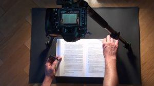

Quintus can be found at qcurtius.com. He is the author of the books On Duties, Thirty Seven, Sallust: The Conspiracy Of Catiline And The War Of Jugurtha, and other books. His work has been reviewed at Taki's Magazine. He can be followed on Twitter


In most situations it is not technology itself that is the problem, but rather how that technology is used. Motivations and objectives of the users matter far more than the medium. Consider the so-called “digitization” of books: we can say that it has the potential both for good and evil. On the hand, its proponents can praise the fact that the digitization of old or rare books has made them available to more people than ever before. There is merit to this view.
Consider the project to make available the brilliantly illuminated Book of Kells, a masterpiece of medieval artistry. Digital databases now make available a tremendous number of old books to more people than ever before. On the surface, this sounds like an unqualified success; only a fool, proponents of digitization would say, would object to this kind of progress in the dissemination of knowledge. Yet we should always be mindful of the fact that technology is not—or should not—be seen as “good” for its own sake. Unless it is employed to serve a good end, it can only be seen as a neutral tool. In the wrong hands it can be an unqualified evil.

These were some of the thoughts that came to mind when I recently read an article about how some universities are abandoning book collections in favor of completely online digital databases. The article relates how the University of California at Berkeley is seeking to “meet the needs of the 21st century student” by slowly phasing out physical copies of books. One student interviewed even said he had never checked out a book from the library. Of course, this shift was presented like a step in the right direction, a bold leap into the modern world where everything would be at everyone’s fingertips.
Of course it was. Every time institutions or authorities seek to curtail our freedom or access to information, such moves are portrayed as advances that are “helping” us or that are giving us more “freedom.” The author of the article notes that most of the best materials are not digitized. Not only this, but online databases can contain a large amount of low-grade information. Perhaps most chilling of all is the fact that converting everything to a digital format makes it far easier for authorities to control the historical record. The Berkeley library article, cited above, made this chilling observation:
Ignoring these older physical media, Dixon argues, is “erasing the past,” until every scrap of information is online. And even then, there are other potential problems. The removal of 60 percent of the physical collection at the science library of the University of California, Santa Cruz, for instance, caused an uproar after it was reported that many of the books removed had been destroyed. A campus spokesman said that nothing had been lost from the scholarly record, since duplicates were retained in other libraries or available online. Given the short timeframe and seeming lack of consultation of the faculty, however, many critics expressed doubts that this was actually the case.
There it is: many of the books removed had been destroyed. So here we see the other big problem in digitization: the lack of accountability that the alleged work is being done. How can we be sure that these institutions are actually scanning the books that they claim to be scanning? Who is monitoring them? Are we willing to trust them for this task? I for one am not.
Let us assume, for the sake of argument, that they actually do what they say they will do. Suppose they do scan or digitize entire libraries. What then? Will it not be far, far easier for systems of authority to control or manipulate access to historical information? How can we be sure that the University of California will not one day decide to prevent access to all works written before 1950 as being “offensive” or not in tune with political correctness? You may laugh at this, or call me an alarmist, but I am not so sure. When it comes to our precious cultural heritage, we cannot place our faith in the same institutions that have been betraying that same heritage for the past forty years.
Seen from this perspective, digitization becomes a stealth technique of censorship. In the future, systems of power and control will not physically throw books into the bonfire; such symbolism would not suit the overlords of political correctness. But they will try to consign our heritage to oblivion in subtler, more devious ways. One can imagine a scenario like this unfolding:
1. Libraries and universities announce that they need to “free up more space” and make libraries “more accessible and welcoming” to a dumbed-down population too addicted to smart phones to know or care about anything beyond them. As in the assault on privacy, this will be done in a way that make the authorities look like they are trying to help us.
2. Political “leaders” mouth platitudes about expanding our “right to choose” and our “freedom of choice” and link this to the push to digitize all physical books they can get their hands on. No agencies or independent monitors are put in place to see that the books are being properly digitized. No one is checking to see what actually becomes of the old books once they are digitized.
3. The modern “library” now becomes a recreational space populated by homeless vagrants, gamers, and screaming young children. (Recall that the Roman forum in classical times was the scene of political debate but became in the Middle Ages a place for grazing cows). The only “books” available on the shelves are those in tune with political correctness. Older books—known to contain dangerous ideas—have been “digitized” and are (in theory) able to be accessed. But the fact that they are so squirreled away makes it unlikely that anyone can find them or easily use them.
4. The gatekeepers of the digital databases now begin to do the unforgivable: they start, in subtle ways, to tamper with the digital databases. Sentences vanish from books. Pages vanish from books. Some books become “illegible” slowly and surely. Rogue librarians take it upon themselves to purge or condense books they don’t like. As the years go by, it becomes harder and harder to locate titles that are deemed “triggering” or “distasteful.” All of this, of course, is done under the guise of “helping” you or making life “easier” for you.
5. The keepers of the databases being to monitor and restrict access to their data. Roadblocks are put in place to deter seekers of knowledge about certain periods of history. Passwords and other forms of “authentication” are slowly put into place to restrict access. Your passwords can be revoked at any time, and thus your ability to learn can be monitored and revoked at any time.
6. Even if there is no overt tampering with data, digital databases are subject to easy destruction by weather, fire, electromagnetic fields, or human error. Physical books, by contrast, are much more difficult to destroy.
If all of this seems farfetched or absurd, think again. Some of the great classics of antiquity survived only in a few neglected manuscripts. In the case of the historians Tacitus or Velleius Paterculus, there was only one single manuscript that survived. When people no longer care about preserving their cultural heritage, it will inevitably be neglected. Monks in the Middle Ages used precious manuscript leaves for prayer-books because they did not care about what was written on the vellum or parchment. In the same way, some of the monuments of ancient Rome were cannibalized to build churches. The point is that someone has to stand guard over knowledge and information and prevent its destruction through neglect or malice. We have been far too willing to accept digitization of physical books without thinking of the inevitable consequences.
For me there is no substitute for a physical book. One of the older books I own is a history of New England published in 1798 in Boston. It was dedicated to president John Adams. Even after 220 years, it is still in good condition. The paper used in those days was high-quality, acid-free rag paper. When you hold it up to the light, you can see how strong it is; books published today just can’t compare to the beauty and durability of very old books. After all these years, it has not faded much, and the paper is not very yellowed.
Does anyone have confidence that our digital databases will still be around in 200 years? We can’t even read emails written 20 years ago. We should be very suspicious of digitization. I understand that we can’t stop the flow of technology; but we can hold our institutions to account. We must be willing to sound the alarm when the inevitable attack on the historical record begins. And make no mistake: the attack is coming. In some ways it is already here, as the article cited above demonstrates. In the meantime, buy physical books, and marvel at their beauty.
Read More: Relentless Media Censorship Is Bringing Us A Fate Worse Than Big Brother